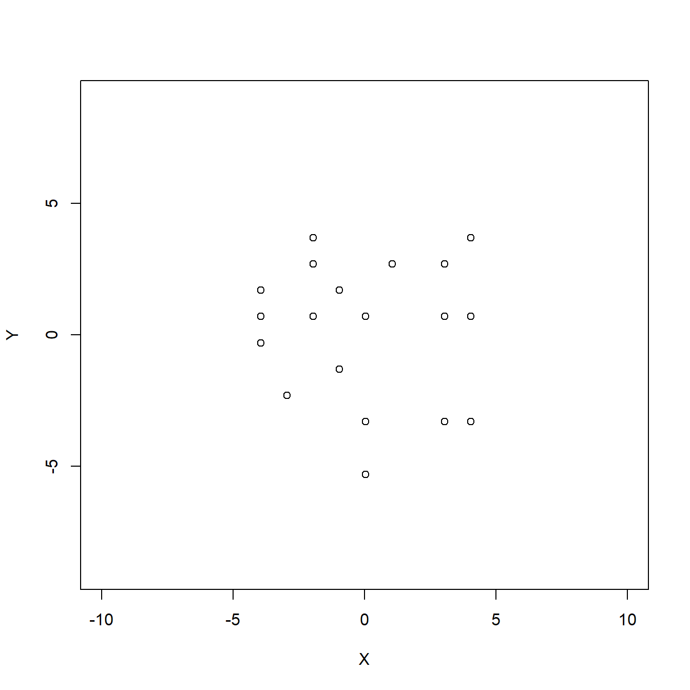
4 Técnicas de reducción de Dimensionalidad
La reducción de la dimensionalidad consiste en describir con cierta precisión los valores de las \(p\) variables por un pequeño subconjunto \(r<p\) de ellas con una pérdida mínima de información. Por lo tanto, proyectaremos la muestra original en el nuevo subespacio pero conservando algunas características (véase Bakker 2024).
Algunos ámbitos importantes en los que es frecuente la utilización de la Reducción de la dimensionalidad podrían ser:
Reconocimiento facial: Al partir de una proyección facial de tamaño \(M \times N\) píxeles puede resultar complicado el estudio completo de dicha imagen, puesto que da lugar a un vector con dimensión excesivamente alta. De modo que debemos reducir la dimensionalidad pero de forma que nos permita generar un sistema de clasificación facial de un individuo entre el resto de la población.
Modelización de secuencias genómicas: Considera una proteína, formada por una secuencia de aminoácidos donde es posible encontrar hasta 20 tipos diferentes, su longitud puede llegar a ser de decenas hasta cientos de decenas de aminoácidos. De modo que, las proteínas con igual estructura pueden ser agrupadas en familias y el conjunto de familias proteicas distintas tendrá una dimensión inferior al conjunto de todas las proteínas. Pudiendo así encontrar de forma menos compleja propiedades particulares o incluso identificar nuevos miembros de una familia.
4.1 Análisis de Componentes Principales
El análisis de componentes principales, PCA por sus siglas en inglés (Principal Component Analysis), es uno de los métodos más populares del análisis multivariado.
El PCA se utiliza cuando deseamos obtener una representación en menor dimensión para un conjunto de variables cuantitativas correlacionadas y queremos expresar la información importante como un conjunto de pocas variables nuevas llamadas componentes principales. Estas componentes se corresponden con una combinación lineal de las variables originales.
Dado que la información de un conjunto de datos se corresponde a la variación total que contiene, el objetivo del PCA es identificar direcciones (o componentes principales) a lo largo de las cuales la variación en los datos es máxima.
4.1.1 Matriz (tabla) de datos
Supongamos que disponemos de una tabla de datos con los valores de \(p\)-variables en \(n\) elementos de una población arreglados en una matriz \(\mathbf{X}\) de la siguiente forma:
| ID | \(\bf{x}_1\) | \(\bf{x}_2\) | \(\ldots\) | \(\bf{x}_p\) | \(\bf{v}_1\) | \(\bf{v}_2\) |
|---|---|---|---|---|---|---|
| \(1\) | \(x_{11}\) | \(x_{12}\) | \(\ldots\) | \(x_{1p}\) | \(v_{11}\) | \(v_{12}\) |
| \(2\) | \(x_{21}\) | \(x_{22}\) | \(\ldots\) | \(x_{2p}\) | \(v_{21}\) | \(v_{22}\) |
| \(3\) | \(x_{31}\) | \(x_{32}\) | \(\ldots\) | \(x_{3p}\) | \(v_{31}\) | \(v_{32}\) |
| \(\vdots\) | \(\vdots\) | \(\vdots\) | \(\vdots\) | \(\ddots\) | \(\vdots\) | \(\vdots\) |
| \(n\) | \(x_{n1}\) | \(x_{n2}\) | \(\ldots\) | \(x_{np}\) | \(v_{n1}\) | \(v_{n2}\) |
Donde las variables \(x_1,\ldots, x_n\) describen a los \(n\) individuos observados.
Las variables \(v_1\), \(v_2\) son de perfil (o explicativas) y ayudan a interpretar la variabilidad de los datos.
El objetivo del análisis es la reducción de la dimensionalidad. Buscamos un espacio de variables más reducido y fácil de interpretar.
El problema es que si reducimos el número de variables es posible que “perdamos parte toda la variabilidad de los datos originales”.
Así la idea básica es consentir una pérdida de información para lograr una ganancia en la significación.
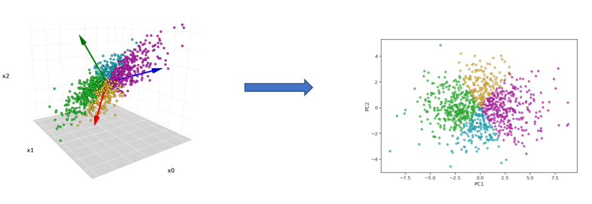
4.1.2 Enfoque geométrico
Supongamos que \(p=2\) y que la nube de puntos de nuestra matriz de datos es la de la siguiente figura:
La siguiente figura muestra las dos componentes principales, es decir, las direcciones de las proyecciones que tienen máxima variabilidad.
{kind=link}
Si proyectamos en la dirección de la primera componente obtendremos las proyecciones siguientes (en color azul):
{kind=link}
Lo que significa que la varianza de los puntos azules es máxima; en el sentido de que cualquier otra dirección o recta, las proyecciones sobre ésta tendrán a lo más igual varianza.
Los puntos azules representan las coordenadas que tienen los puntos de nuestra tabla de datos (centrada) tomando como eje de abcisas la primera componente \(CP_1\).
Si proyectamos en la dirección de la “segunda componente”, obtendremos las proyecciones siguientes (en color verde):

4.2 Cálculo de las componentes
4.2.1 Cálculo de la primera componente
La primera componente principal se define como la combinación lineal de las variables originales que tiene varianza máxima. Los valores en esta primera componente de los \(n\) individuos se representarán por un vector \(\mathbf{z_1}\) dado por \[\mathbf{z_1}=\mathbf{Xa_1}.\] Si las variables originales tienen media cero, \(\mathbf{z_1}\) también tendrá media nula. Su varianza será
\[\begin{equation} \tag{1} Var(\mathbf{z_1})=\frac{1}{n}\mathbf{z_1^t}\mathbf{z_1}=\frac{1}{n}\mathbf{a_1^t X^t}\mathbf{Xa_1}=\mathbf{a_1^t S}\mathbf{a_1} \end{equation}\]
donde \(\mathbf{S}\) es la matriz de varianzas-covarianzas de las observaciones.
Es obvio que podemos maximizar la varianza tanto como queramos aumentando el módulo del vector \(\mathbf{a_1}\). Para que maximizar (1) tenga solución debemos imponer una restricción al módulo del vector \(\mathbf{a_1}\), y, sin pérdida de generalidad, impondremos que \(\mathbf{a_1^t}\mathbf{a_1}=1\). Introducimos esta restricción mediante el multiplicador de Lagrange: \[M=\mathbf{a_1^t}S\mathbf{a_1}-\lambda(\mathbf{a_1^t}\mathbf{a_1}-1)\] y maximizamos esta expresión derivando respecto a las componentes de \(\mathbf{a_1}\) e igualando a cero. Entonces \[\frac{\partial M}{\partial \mathbf{a_1}}=2\mathbf{Sa_1}-2 \lambda \mathbf{a_1}=0,\]
cuya solución es:
\[\begin{equation} \tag{2} \mathbf{Sa_1}= \lambda \mathbf{a_1}, \end{equation}\]
que implica que \(\mathbf{a_1}\) es un vector propio de la matriz \(\mathbf{S}\), y \(\lambda\) su correspondiente valor propio.
Para determinar qué valor propio de \(\mathbf{S}\) es la solución de (2), multiplicamos por la izquierda por \(\mathbf{a_1^t}\) a esta ecuación,
\[\begin{equation} \mathbf{a_1^t S a_1}= \lambda \mathbf{a_1^t a_1}= \lambda \end{equation}\]
y concluimos, por (1) que \(\lambda\) es la varianza de \(\mathbf{z_1}\). Como esta es la cantidad que queremos maximizar, \(\lambda\) será el mayor valor propio de la matriz \(\mathbf{S}\). Su vector asociado, \(\mathbf{a_1}\), define los coeficientes de cada variable en la primera componente principal.
4.2.2 Ejemplo:
Calculad la primera componente principal con los logaritmos del fichero acciones.txt que podéis descargad en Aula Digital. Las observaciones corresponden a distintas acciones que cotizan en el mercado español y las variables son:
V1la rentabilidad efectiva por dividendos,V2la proporción de beneficios que va a dividendosV3el ratio entre precio por acción y beneficios.
¿Cuál de las variables está mejor representada por la componente principal 1?
Solución
Cargamos los datos
datos<-read.table("datos/acciones.txt")
n=dim(datos)[1]
n[1] 34La tabla presenta tres medidas de rentabilidad de 34 acciones en bolsa. Vamos a reescribirlas para ganar interpretabilidad. Llamamos \(d\) a los dividendos por acción, \(p\) al precio de la acción, \(B\) al beneficio y \(N\) al número de acciones. Entonces:
V1es la rentabilidad efectiva por dividendos, es decir, dividendos repartidos por acción divididos por precio de la acción. \(V1=\frac{d}{p}\).V2es la proporción de beneficios que va a dividendos. \(V2=\frac{dN}{B}\).V3es el cociente entre precio y beneficio por acción. \(V3=\frac{p}{B/N}=\frac{pN}{B}\)
Exploramos los datos
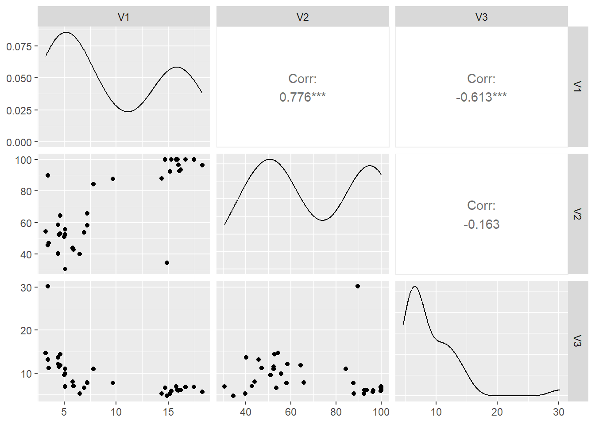
Las densidades indican un alejamiento de la distribución normal para las tres variables. Las dos primeras sugieren la presencia de dos grupos de datos distintos (acciones con comportamientos distintos), y la tercera tiene una densidad muy asimétrica, con al menos un valor atípico.
Por la forma de cálculo de las variables, es lógico esperar alta correlación positiva entre V1 y v2. La correlación negativa baja entre V1 y v3, así como alta negativa entre V2 yv3.
Ahora, estimamos la matriz de varianzas-covarianzas de las variables originales V1, v2 y V3, con el estimador sesgado:
S0=round(((n-1)/n)*cov(datos),2)
S0 V1 V2 V3
V1 28.24 97.49 -15.24
V2 97.49 559.28 -18.00
V3 -15.24 -18.00 21.90Recordad que las densidades de las tres variables han mostrado una clara falta de normalidad y entre ellas hay relaciones no lineales. En estas condiciones, la matriz de varianzas-covarianzas no es un buen resumen de las relaciones de dependencia existentes.
Para tratar de resolver el problema anterior, podemos usar el logaritmo que es una de las transformaciones más utilizadas para datos positivos en los siguientes casos:
Los datos describen el tamaño de las cosas (renta de países o familias habitantes en las principales ciudades del mundo, tamaño de empresas, consumo de energía en hogares, etc), son generalmente muy asimétricas, pero se convierten en aproximadamente simétricas al expresar la variable en logaritmos.
Cuando las diferencias relativas entre los valores de la variable son importantes, conviene expresar las variables en logaritmos, ya que las diferencias entre logaritmos equivalen a diferencias relativas en la escala original.
La variabilidad de las variables transformadas es independiente de las unidades de medida. Para mostrar esta propiedad, supongamos que tenemos una sola variable aleatoria \(X\) que transformamos con \(Y = \log X\), la variable transformada tiene media \(\mu_Y\) y varianza \(\sigma^2_Y\). Si cambiamos las unidades de medida de \(X\) multiplicando por una constante, \(Z = kX\), entonces la variable \(\log Z\) tiene media \(Y + \log k\) y la misma varianza que la variable \(\log X\). Por tanto, al tomar logaritmos en las variables, las varianzas pueden compararse aunque los datos tengan distintas dimensiones.
De acuerdo a los anterior, aplicamos una transformación logarítmica a nuestros datos, con lo cual, la matriz de varianzas-covarianzas de las variables transformadas, sería:
datos_l=log(datos)
S=round(((n-1)/n)*cov(datos_l),2)
S V1 V2 V3
V1 0.35 0.15 -0.19
V2 0.15 0.13 -0.03
V3 -0.19 -0.03 0.16Observad que los logaritmos modifican mucho los resultados. Los datos ahora son más homogéneos y la variable de mayor varianza pasa a ser la primera, el logaritmo de la rentabilidad efectiva, mientras que la menor es la segunda, el logaritmo de la proporción de beneficios que va a dividendos. La relación entre el logaritmo del ratio precio/beneficios y la rentabilidad efectiva es negativa. Las otras relaciones son débiles.
Calculamos los valores propios de la matriz de varianzas covarianzas de los datos transformados que son las raíces de la ecuación
\[ \begin{equation} \begin{split} |S-\lambda I| & = \left| \begin{pmatrix}0.35 & 0.15 & -0.19\\ 0.15 & 0.13 & -0.03 \\ -0.19 & -0.03 & 0.16\end{pmatrix} -\begin{pmatrix} \lambda & 0 & 0\\ 0 & \lambda & 0 \\ 0 & 0 & \lambda\end{pmatrix} \right| \\ \\ & = 0.000382-0.0628\lambda+0.64 \lambda^2 -\lambda^3 =0 \end{split} \end{equation} \]
Buscamos las raíces de este polinomio son
library(polynom)
p=polynomial(coef=c(0.00038,-0.0628,0.64,-1))
raices=round(solve(p),3)Las raíces son \(\lambda_1\)=0.521, \(\lambda_2\)=0.113 y \(\lambda_3\)=0.006.
El vector propio asociado a \(lambda_1\) nos da los pesos de la primera componente principal. Para calcularlo manualmente, debemos resolver el sistema \[S \mathbf{a_1}= \lambda_1 \mathbf{a_1}\] que conduce a
\[ \begin{equation} \begin{split} \begin{pmatrix}0.35 & 0.15 & -0.19\\ 0.15 & 0.13 & -0.03 \\ -0.19 & -0.03 & 0.16\end{pmatrix} \begin{pmatrix} a_{11} \\a_{12} \\ a_{131} \end{pmatrix} &=0.521 \cdot \begin{pmatrix} a_{11} \\a_{12} \\ a_{131} \end{pmatrix} \end{split} \end{equation} \] \[ \begin{equation} \begin{split} \begin{pmatrix}-0.171 a_{11}+0.15 a_{12} -0.19 a_{13} \\ 0.15 a_{11}-0.391 a_{12} -0.03 a_{13}\\ -0.19 a_{11}-0.03 a_{12} -0.361 a_{13}\end{pmatrix} &= \begin{pmatrix} 0 \\0 \\ 0 \end{pmatrix} \end{split} \end{equation} \] Este sistema es compatible indeterminado. Para encontrar una de las infinitas soluciones tomemos la primera variable como parámetro, \(x\), y resolvemos el sistema en función de \(x\). La solución es,
\[\{a_{11}=x,\; a_{12}=0.427x,\; a_{13}=-0.562x\]
El valor de \(x\) lo obtenemos imponiendo que el vector tenga norma uno, con lo que resulta:
\[\mathbf{a_1}=\begin{pmatrix} -0.817 \\-0.349 \\ 0.459 \end{pmatrix}\]
Por lo tanto, la primera componente es \[Z_1=-0.817 \log(d/p)-0.349 \log(dN/p)+0.459 \log(pN/B)\]
que indica que este primer componente depende básicamente de la rentabilidad por dividendos. Esta variable es la que mejor explica la variabilidad conjunta de las acciones.
4.2.3 Cálculo de la segunda componente
Vamos a obtener el mejor plano de proyección de l matriz \(\mathbf{X}\). Lo calcularemos estableciendo como función objetivo que la suma de las varianzas de \(\mathbf{z_1}=\mathbf{Xa_1}\) y \(\mathbf{z_2}=\mathbf{Xa_2}\) sean máximas, donde \(\mathbf{a_1}\) y \(\mathbf{a_2}\) son los vectores que definen el plano. La función objetivo será:
\[\begin{equation} \tag{3} \phi=\mathbf{a_1^t S}\mathbf{a_1} + \mathbf{a_2^t S}\mathbf{a_2} - \lambda_1 (\mathbf{a_1^t}\mathbf{a_1}-1) - \lambda_2 (\mathbf{a_2^t}\mathbf{a_2}-1) \end{equation}\]
que incorpora las restricciones de que las direcciones deben de tener módulo unitario. Derivando e igualando a cero: \[\frac{\partial \phi}{\partial \mathbf{a_1}}=2\mathbf{Sa_1}-2 \lambda_1 \mathbf{a_1}=0\]
\[\frac{\partial \phi}{\partial \mathbf{a_2}}=2\mathbf{Sa_2}-2 \lambda_2 \mathbf{a_1}=0\]
La solución del sistema es: \[\begin{equation} \tag{4} \mathbf{Sa_1}= \lambda \mathbf{a_1}, \end{equation}\] \[\begin{equation} \tag{5} \mathbf{Sa_2}= \lambda \mathbf{a_2}, \end{equation}\]
que indica que \(\mathbf{a_1}\) y \(\mathbf{a_2}\) deben ser vectores propios de \(\mathbf{S}\).
Tomando los vectores propios de norma uno y sustituyendo en (3), se obtiene que, en el máximo, la función objetivo es \[\begin{equation} \tag{6} \phi=\lambda_1+\lambda_2 \end{equation}\]
es claro que \(\lambda_1\) y \(\lambda_2\) deben ser los dos valores propios mayores de la matriz \(\mathbf{S}\) y \(\mathbf{a_1}\) y \(\mathbf{a_2}\) sus correspondientes vectores propios.
Observad que la covarianza entre \(\mathbf{z_1}\) y \(\mathbf{z_2}\), dada por \(\mathbf{a_1^t S a_2}\) es cero ya que =0, y las variables\(\mathbf{z_1}\) y \(\mathbf{z_2}\) estarán incorreladas.
Se puede demostrarse que si en lugar de maximizar la suma de varianzas, que es la traza de la matriz de covarianzas de la proyección, se maximiza la varianza generalizada (el determinante de la matriz de covarianzas) se obtiene el mismo resultado.
4.2.3.1 Generalización
Análogamente, el espacio de dimensión \(r\) que mejor representa a los puntos viene definido por los vectores propios asociados a los \(r\) mayores valores propios de \(\mathbf{S}\). Estas direcciones se denominan direcciones principales de los datos y a las nuevas variables por ellas definidas componentes principales. En general, la matriz \(\mathbf{X}\) (y por tanto la \(\mathbf{S}\)) tiene rango \(p\), existiendo entonces tantas componentes principales como variables que se obtendrán calculando los valores propios o raíces características, \(\lambda_1, \ldots, \lambda_p\), de la matriz de varianzas y covarianzas de las variables, \(\mathbf{S}\) , mediante:
\[\begin{equation} \tag{7} |\mathbf{S}-\lambda\mathbf{I}|=0 \end{equation}\]
y sus vectores asociados son: \[\begin{equation} \tag{8} (\mathbf{S}-\lambda_i\mathbf{I})\mathbf{a_i}=0. \end{equation}\]
Los términos \(\lambda_i\) son reales, al ser la matriz \(\mathbf{S}\) simétrica, y positivos, ya que \(\mathbf{S}\) es definida positiva.
Por ser \(\mathbf{S}\) simétrica si \(\lambda_j\) y \(\lambda_h\) son dos raíces distintas sus vectores asociados son ortogonales.
Si \(\mathbf{S}\) fuese semidefinida positiva de rango \(r < p\), lo que ocurriría si \(p−r\) variables fuesen combinación lineal de las demás, habría solamente \(r\) raíces características positivas y el resto serían ceros.
Llamando \(\mathbf{Z}\) a la matriz cuyas columnas son los valores de las \(p\) componentes en los \(n\) individuos, estas nuevas variables están relacionadas con las originales mediante:
\[\begin{equation} \tag{9} \mathbf{Z}=\mathbf{X}\mathbf{A} \end{equation}\]
donde \(\mathbf{A^t A}=\mathbf{I}\). Calcular las componentes principales equivale a aplicar una transformación ortogonal \(\mathbf{A}\) a las variables \(\mathbf{X}\) (ejes originales) para obtener unas nuevas variables \(\mathbf{Z}\) incorreladas entre sí. Esta operación puede interpretarse como elegir unos nuevos ejes coordenados, que coincidan con los “ejes naturales” de los datos.
4.2.3.2 Ejemplo:
Vamos a realizar el análisis de componentes principales (PCA) sobre el conjunto de datos de las acciones del mercado español, esta vez utilizando a R para calcular los valores y vectores propios.
Recordad que ya hemos calculado la matriz de varianzas-covarianzas muestral sesgada de los datos transformados, \(S\)=0.35, 0.15, -0.19, 0.15, 0.13, -0.03, -0.19, -0.03, 0.16.
sol=eigen(S)Los valores propios son:
\[\lambda_1=0.521,\quad \lambda_2=0.113,\quad \lambda_3 = 0.007.\]
- Los vectores propios ortonormales correspondientes a los valores propios, son los que aparecen con el nombre:
$vectors
Las expresiones de las variables nuevas \(CP_i\) en función de los logaritmos de las originales son:
\[\begin{array}{rl} Z_1 = & 0.817 \cdot \log V_1 + 0.349\cdot \log V_2 - 0.459 \cdot \log V_3, \\ Z_2 = & 0.043 \cdot \log V_1 + 0.758\cdot \log V_2 + 0.651 \cdot \log V_3, \\ Z_3 = & 0.575 \cdot \log V_1 - 0.552 \cdot \log V_2 + 0.604 \cdot \log V_3, \\ \end{array}\]
La nueva matriz de datos respecto de las componentes principales será:
X=matrix(c(datos_l$V1,datos_l$V2,datos_l$V3),nrow=34)
Z=X %*% sol$vectors # Z=XA con A la matriz de vectores propios
head(Z) [,1] [,2] [,3]
[1,] 1.003343 5.678343 0.28103506
[2,] 1.680545 4.608193 0.10346897
[3,] 1.487526 4.652723 0.15673341
[4,] 1.257073 4.543832 0.05520223
[5,] 1.866053 4.187286 0.12455276
[6,] 1.637393 3.919281 0.21592221Si representamos gráficamente las dos primeras componentes, podemos observar que se puede distinguir entre los dos grupos de acciones.
plot(Z[,1],Z[,2])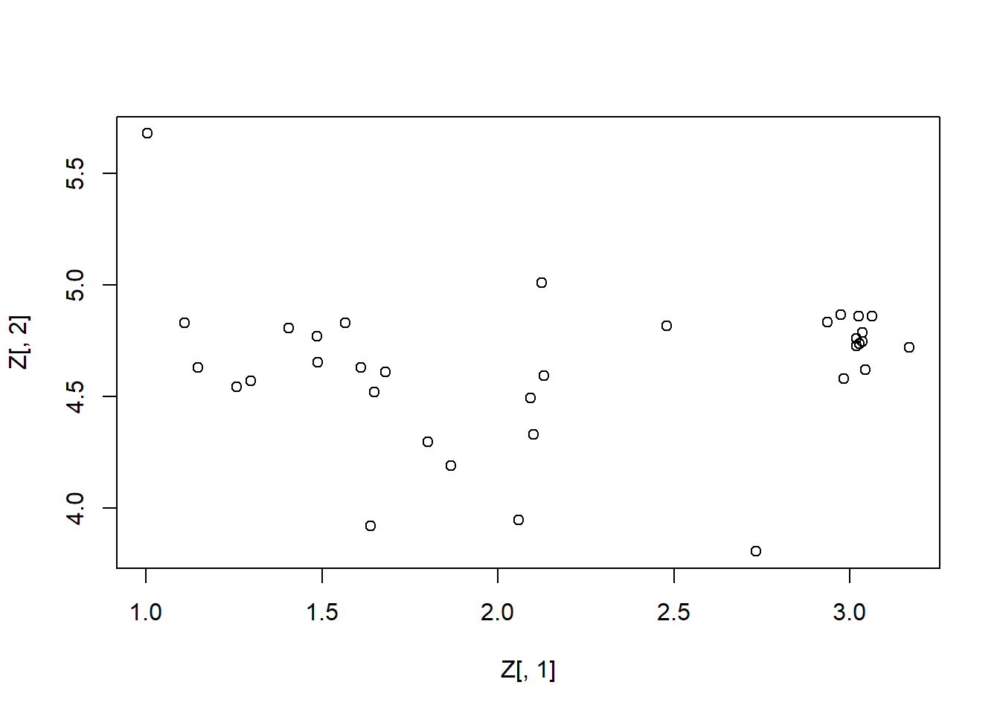
¿Qué hubiese pasado si centramos los datos?
Aunque no es obligatorio centrar la matriz de datos para PCA, es una práctica común y recomendada, ya que ayuda a garantizar que las componentes principales reflejen de manera más precisa la estructura de variabilidad en los datos.
Si no se centran los datos, la primera componente principal estaría influenciada por la ubicación de los datos en el espacio original, es decir, por la media de los datos. En nuestro ejemplo, esto está minimizado por el efecto de la transformación logarítmica.
Veamos los resultados centrando los datos
colMeans(X)[1] 2.071865 4.178913 2.117252Hn=diag(n)-1/n # matriz de centrado
cX=Hn%*%X # matriz centrada
round(cX,3) [,1] [,2] [,3]
[1,] -0.848 0.318 1.291
[2,] -0.443 -0.159 0.175
[3,] -0.568 -0.222 0.325
[4,] -0.819 -0.329 0.299
[5,] -0.297 -0.425 -0.171
[6,] -0.443 -0.758 -0.186
[7,] -0.546 -0.014 0.351
[8,] -0.462 -0.247 0.145
[9,] -0.909 -0.183 0.571
[10,] -0.848 -0.357 0.463
[11,] -0.200 -0.493 -0.469
[12,] -0.590 -0.483 0.500
[13,] -0.443 -0.220 0.281
[14,] -0.314 -0.397 -0.038
[15,] -0.546 -0.212 0.550
[16,] -0.098 0.008 -0.063
[17,] -0.098 -0.117 -0.076
[18,] -0.590 -0.110 0.376
[19,] -0.018 0.255 0.281
[20,] 0.701 0.391 -0.325
[21,] 0.744 0.426 -0.200
[22,] 0.649 0.346 -0.469
[23,] 0.790 0.425 -0.200
[24,] 0.713 0.359 -0.309
[25,] 0.616 0.426 -0.230
[26,] 0.656 0.425 -0.342
[27,] 0.688 0.426 -0.186
[28,] 0.835 0.389 -0.377
[29,] 0.694 0.426 -0.309
[30,] 0.707 0.348 -0.309
[31,] 0.200 0.294 -0.076
[32,] -0.140 -0.197 -0.230
[33,] 0.595 0.296 -0.469
[34,] 0.629 -0.638 -0.572Sc<-(1/n)*t(cX)%*%Hn%*%cX # estimador sesgado de la matriz de covarianza
round(Sc,3) # daría igual cov(cX)*(n-1)/n [,1] [,2] [,3]
[1,] 0.352 0.147 -0.188
[2,] 0.147 0.131 -0.031
[3,] -0.188 -0.031 0.158solc<-eigen(Sc)Zc=cX %*% solc$vectors
plot(Zc[,1],Zc[,2])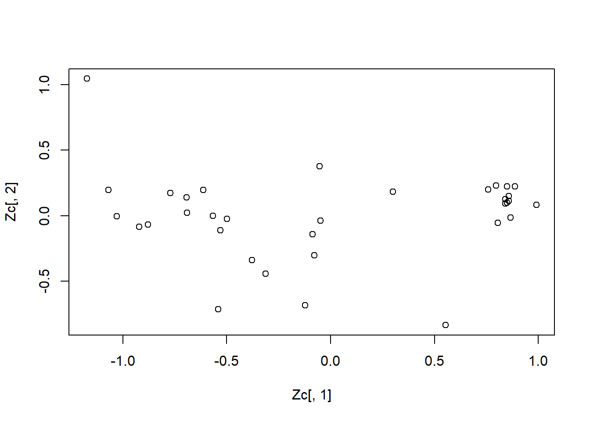
4.3 Propiedades del ACP
4.3.1 ACP con la matriz de covarianzas
Los componentes principales como nuevas variables tienen las propiedades siguientes:
Las componentes principales reproducen la varianza total. \[\sum_{i=1}^p Var(\mathbf{Z}_i)=\sum_{i=1}^p \lambda_i=tr(\mathbf{S})=\sum_{i=1}^p s_i^2\].
Los componentes principales tienen correlación cero entre sí (son incorrelados) por lo tanto su matriz de covarianzas es
\[\mathbf{S}_{Z}=\left(\begin{array}{cccc} \lambda_1& 0 &\ldots &0\\ 0& \lambda_{2}&\ldots & 0\\ \vdots & \vdots & & \vdots\\ 0 & 0&\ldots &\lambda_{p} \end{array} \right)\]
\(\det(\mathbf{S}_{Z})=\prod_{i=1}^p \lambda_i =\det(\mathbf{S})\). Luego los componentes principales conservan la varianza generalizada.
- La proporción de varianza explicada por la componente \(j\)-ésima es \[\frac{\lambda_j}{\sum_{i=1}^p \lambda_i}.\]
Además al ser incorrelados la proporción de varianza explicada por los \(k\) primeros componentes es \[\frac{\sum_{i=1}^k \lambda_i}{\sum_{i=1}^p \lambda_i}.\]
\(\mbox{Cov}(\tilde{\mathbf{X}}_i, \mathbf{Z}_j)=\frac{\sqrt{\lambda_j} a_{j i}}{s_i}\), donde \(a_{j i}\) es la \(i\)-ésima componente del vector propio \(\mathbf{a}_j\).
4.3.2 ACP normado o con matriz de correlaciones
Las componentes principales se obtienen maximizando la varianza de la proyección. En términos de las variables originales esto supone maximizar:
\[M=\displaystyle \sum_{i=1}^p a_i^2s_i^2+ 2 \displaystyle \sum_{i=1}^p \displaystyle \sum_{j=i+1}^p a_i a_j s_{ij}\] con la restricción \(\mathbf{a^ta}=1\). Si alguna de las variables, por ejemplo la primera, tiene una varianza \(s^2_1\), mayor que las demás, la manera de aumentar \(M\) es hacer tan grande como podamos la coordenada \(a_1\) asociada a esta variable. En el límite si una variable tiene una varianza mucho mayor que las demás el primer componente principal coincidirá muy aproximadamente con esta variable.
Cuando las variables tienen unidades distintas esta propiedad no es conveniente: si disminuimos la escala de medida de una variable cualquiera, de manera que aumenten en magnitud sus valores numéricos (pasamos por ejemplo de medir en km. a medir en metros), el peso de esa variable en el análisis aumentará, ya que en la ecuación anterior:
su varianza será mayor y aumentará su coeficiente en el componente, \(a_1\), ya que contribuye más a aumentar M;
sus covarianzas con todas las variables aumentarán, con el consiguiente efecto de incrementar \(a_i\).
En resumen, cuando las escalas de medida de las variables son muy distintas, la maximización de \(M\) dependerá decisivamente de estas escalas de medida y las variables con valores más grandes tendrán más peso en el análisis.
Si queremos evitar este problema, conviene estandarizar las variables antes de calcular los componentes, de manera que las magnitudes de los valores numéricos de las variables \(X\) sean similares.
La estandarización resuelve otro posible problema. Si las variabilidades de la \(X\) son muy distintas, las variables con mayor varianza van a influir más en la determinación de la primera componente. Este problema se evita al estandarizar las variables, ya que entonces las varianzas son la unidad, y las covarianzas son los coeficientes de correlación. La ecuación a maximizar se transforma en:
\[M'=1 + 2 \displaystyle \sum_{i=1}^p \displaystyle \sum_{j=i+1}^p a_i a_j r_{ij}\] siendo \(r_{ij}\) el coeficiente de correlación lineal entre las variables \(i\), \(j\). En consecuencia la solución depende de la correlaciones y no de las varianzas.
Las componentes principales normados se obtiene calculando los vectores y valores propios de la matriz R, de coeficientes de correlación. Llamando \(\lambda_p^R\) a las raíces características de esa matriz, que suponemos no singular, se verifica que: \[{\sum_{i=1}^p \lambda_i^R}=traza(R)=p\] Las propiedades de las componentes extraídos de \(R\) son:
La proporción de variación explicada por \(\lambda_p^R\) será \(\frac{\lambda_p^R}{p}\).
Las correlaciones entre cada componente \(z_j\) y las variables \(X\) originales vienen dadas directamente por \(a^t_j \sqrt{\lambda_j}\), siendo \(\mathbf{z_j}=\mathbf{Xa_j}\).
Estas propiedades son consecuencia inmediata de los resultados de la sección anterior.
Cuando las variables X originales están en distintas unidades conviene aplicar el análisis de la matriz de correlaciones o análisis normado.
Cuando las variables tienen las mismas unidades, ambas alternativas son posibles.
Si las diferencias entre las varianzas de las variables son informativas y queremos tenerlas en cuenta en el análisis no debemos estandarizar las variables: por ejemplo, supongamos dos índices con la misma base pero uno fluctua mucho y el otro es casi constante. Este hecho es informativo, y para tenerlo en cuenta en el análisis, no se deben estandarizar las variables, de manera que el índice de mayor variabilidad tenga más peso. Por el contrario, si las diferencias de variabilidad no son relevantes podemos eliminarlas con el análisis normado. En caso de duda, conviene realizar ambos análisis, y seleccionar aquel que conduzca a conclusiones más informativas.
4.4 Análisis de Componentes Principales en R
Vamos a explicar las funciones de R para hacer el PCA, para ello utilizaremos los famosos datos de las flores iris.

head(iris,2) Sepal.Length Sepal.Width Petal.Length Petal.Width Species
1 5.1 3.5 1.4 0.2 setosa
2 4.9 3.0 1.4 0.2 setosatail(iris,2) Sepal.Length Sepal.Width Petal.Length Petal.Width Species
149 6.2 3.4 5.4 2.3 virginica
150 5.9 3.0 5.1 1.8 virginicaLo primero que hacemos es revisar si las variables están correlacionadas, requisito necesario para obtener una representación más simple de éstas.
cov(iris[,1:4]) Sepal.Length Sepal.Width Petal.Length Petal.Width
Sepal.Length 0.6856935 -0.0424340 1.2743154 0.5162707
Sepal.Width -0.0424340 0.1899794 -0.3296564 -0.1216394
Petal.Length 1.2743154 -0.3296564 3.1162779 1.2956094
Petal.Width 0.5162707 -0.1216394 1.2956094 0.5810063cor(iris[,1:4]) Sepal.Length Sepal.Width Petal.Length Petal.Width
Sepal.Length 1.0000000 -0.1175698 0.8717538 0.8179411
Sepal.Width -0.1175698 1.0000000 -0.4284401 -0.3661259
Petal.Length 0.8717538 -0.4284401 1.0000000 0.9628654
Petal.Width 0.8179411 -0.3661259 0.9628654 1.0000000Comparamos las funciones de R para hacer el PCA
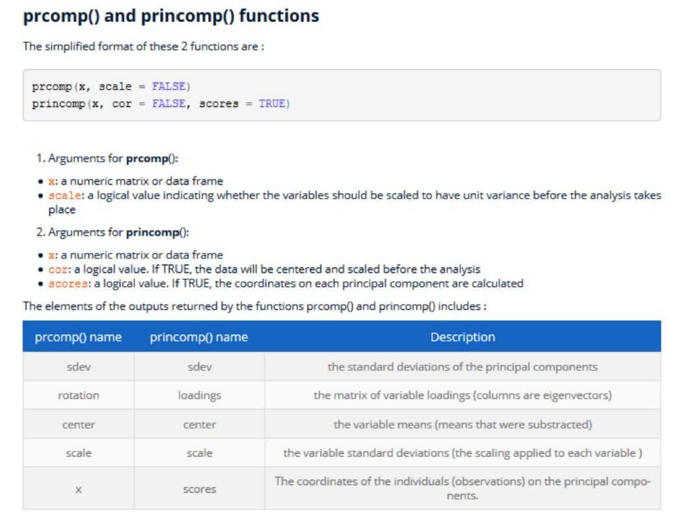
Calculamos las componentes con los datos escalados con la librería factoextra
library(ggplot2)
library("factoextra")
iris.acp=prcomp(iris[,1:4], scale = TRUE)Los valores propios muestran el porcentaje de varianza explicada por cada componente principal.
lambdas=get_eigenvalue(iris.acp)
lambdas eigenvalue variance.percent cumulative.variance.percent
Dim.1 2.91849782 72.9624454 72.96245
Dim.2 0.91403047 22.8507618 95.81321
Dim.3 0.14675688 3.6689219 99.48213
Dim.4 0.02071484 0.5178709 100.00000Observamos que las dos primeras componentes principales explican aproximadamente el 96% de la variación total. Puede ser razonable, trabajar con esas dos componentes para el análisis posterior de estos datos.
Un método alternativo para determinar el número de componentes principales es observar el diagrama de valores propios ordenados de mayor a menor. El número de componentes se determina en el punto, más allá del cual los valores propios restantes son todos relativamente pequeños y de tamaño comparable.
fviz_eig(iris.acp, addlabels = TRUE, ylim=c(0,100))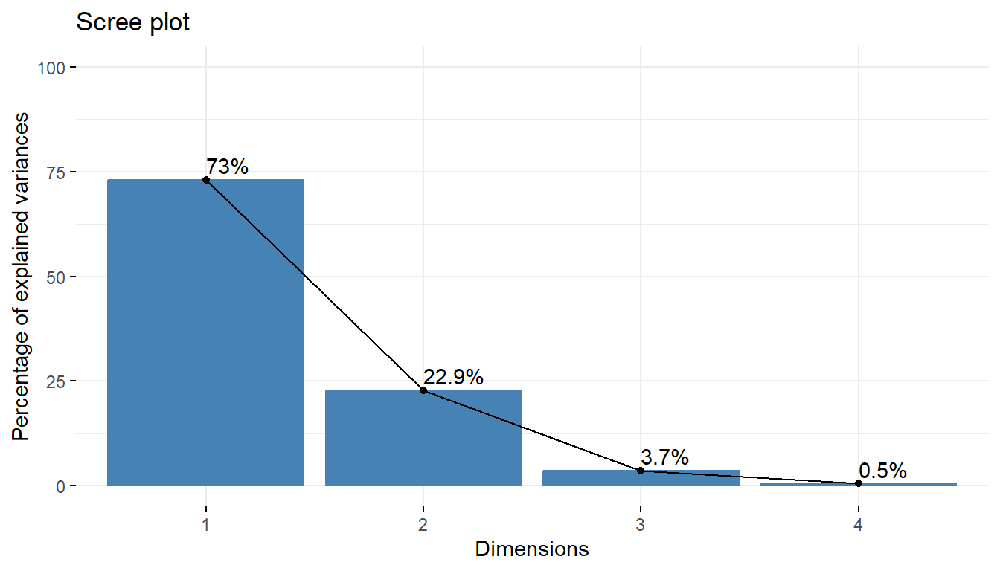
La representación de variables difiere de la gráfica de las observaciones: Las observaciones están representadas por sus proyecciones, pero las variables están representados por sus correlaciones.
fviz_pca_var(iris.acp, col.var = "contrib",
gradient.cols = c("#00AFBB", "#E7B800", "#FC4E07"),
repel = TRUE) 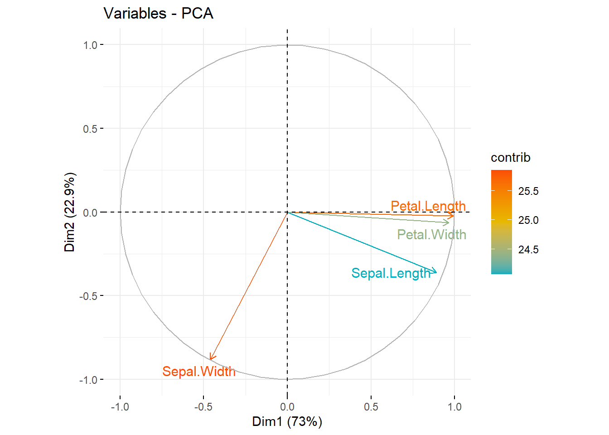
El gráfico anterior también se conoce como círculo de correlación variable. Muestra las relaciones entre todas las variables. Se puede interpretar de la siguiente manera:
Las variables correlacionadas positivamente se agrupan.
Las variables correlacionadas negativamente se colocan en lados opuestos del origen de la trama (cuadrantes opuestos).
La distancia entre variables y el origen mide la calidad de la representación de las variables, las que están alejadas del origen están bien representadas.
La calidad de representación de las variables se llama cos2 (coseno cuadrado, coordenadas cuadradas). Es posible crear un diagrama de barras de las variables cos2:
var <- get_pca_var(iris.acp)
fviz_cos2(iris.acp, choice = "var", axes = 1:2)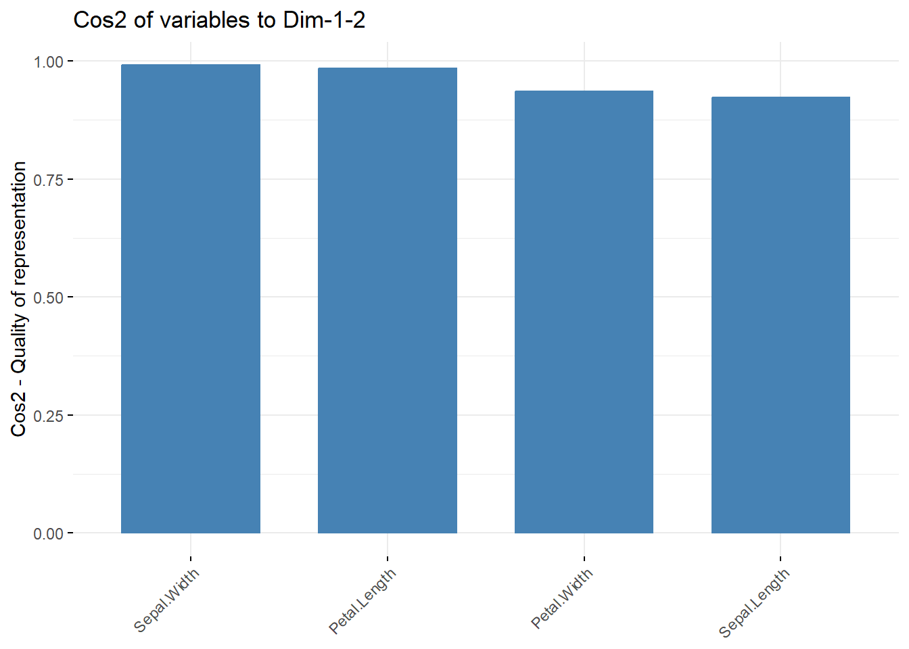
Un cos2 alto indica una buena representación de la variable en el componente principal. En este caso, la variable se coloca cerca de la circunferencia del círculo de correlación.
Un cos2 bajo indica que la variable no está perfectamente representada por los PC. En este caso, la variable está cerca del centro del círculo.
Para ver como se relacionan las componentes principales con los datos originales, veamos los autovectores.
iris.acp$rotation PC1 PC2 PC3 PC4
Sepal.Length 0.5210659 -0.37741762 0.7195664 0.2612863
Sepal.Width -0.2693474 -0.92329566 -0.2443818 -0.1235096
Petal.Length 0.5804131 -0.02449161 -0.1421264 -0.8014492
Petal.Width 0.5648565 -0.06694199 -0.6342727 0.5235971La primera componente principal da aproximadamente el mismo peso a la longitud del sépalo, la longitud del pétalo y el ancho del pétalo, pero da peso de signo contrario al ancho del sépalo.
La segunda componente principal se refiere principalmente al sépalo.
El biplot es un gráfico que permite representar las variables originales y las observaciones transformadas en los ejes de componentes principales.
Cada flecha corresponde a una variable.
Nos fijamos primeramente en las direcciones de las flechas y su sentido.
Dos flechas que apunten al mismo lugar indica correlación alta.
Dos flechas con sentidos diferentes pero en la misma dirección indican una correlación negativa.
Cuando dos variables no están correladas en absoluto, se observan dos flechas apuntando en direcciones totalmente perpendiculares.
En cuanto a la diferencia en la longitud de las flechas, una menos larga informa que su variable está peor representada que una de largo mayor. Es una forma de medir la calidad de representación.
fviz_pca_biplot(iris.acp, repel = TRUE,
col.var = "#2E9FDF", # color para las variables
col.ind = "#696969" # color para las observaciones
)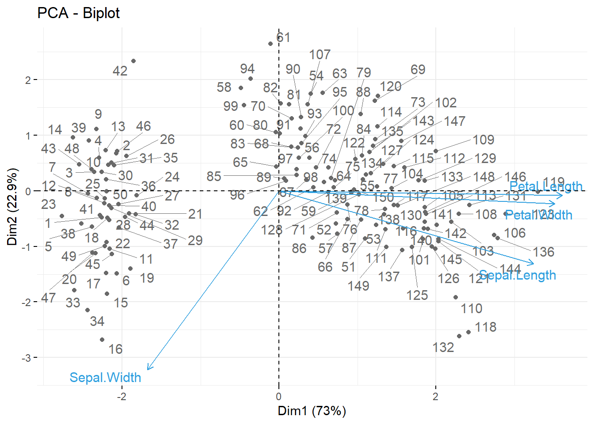
En el gráfico anterior podemos observar lo siguiente:
Todas las variables originales tienen influencia en las componentes principales (lo cual se evidencia en el tamaño de las flechas).
La flecha más larga corresponde al ancho del sépalo, ya que tiene una fuerte influencia (loading) sobre la segunda componente.
La dirección de esta última flecha indica que el “loading” del ancho del sépalo para la primera componente es negativo.
Los “loadings” de las variables longitud del pétalo y ancho del pétalo con respecto a la segunda componente son muy bajos (las flechas son prácticamente horizontales).
La variable longitud del sépalo tiene loadings relativamente altos en las dos componentes principales.
Acceso a los resultados del ACP
# Resultados por Variables
res.var=get_pca_var(iris.acp)
res.var$contrib # Contribuciones a las CP Dim.1 Dim.2 Dim.3 Dim.4
Sepal.Length 27.150969 14.24440565 51.777574 6.827052
Sepal.Width 7.254804 85.24748749 5.972245 1.525463
Petal.Length 33.687936 0.05998389 2.019990 64.232089
Petal.Width 31.906291 0.44812296 40.230191 27.415396res.var$cos2 # Calidad de la representación Dim.1 Dim.2 Dim.3 Dim.4
Sepal.Length 0.7924004 0.130198208 0.075987149 0.0014142127
Sepal.Width 0.2117313 0.779188012 0.008764681 0.0003159971
Petal.Length 0.9831817 0.000548271 0.002964475 0.0133055723
Petal.Width 0.9311844 0.004095980 0.059040571 0.0056790544# Resultados por observaciones
res.obs=get_pca_ind(iris.acp)
head(res.obs$coord,3) #Coordenadas Dim.1 Dim.2 Dim.3 Dim.4
1 -2.257141 -0.4784238 0.1272796 0.02408751
2 -2.074013 0.6718827 0.2338255 0.10266284
3 -2.356335 0.3407664 -0.0440539 0.02828231head(res.obs$contrib,3) #Contribuciones a las CP Dim.1 Dim.2 Dim.3 Dim.4
1 1.163769 0.16694510 0.073591567 0.01867287
2 0.982590 0.32925696 0.248367113 0.33919842
3 1.268304 0.08469576 0.008816151 0.02574286head(res.obs$cos2,3) # Calidad de la representación Dim.1 Dim.2 Dim.3 Dim.4
1 0.9539975 0.04286032 0.0030335249 0.0001086460
2 0.8927725 0.09369248 0.0113475382 0.0021874817
3 0.9790410 0.02047578 0.0003422122 0.0001410446¿Qué tan bien lo hace el ACP?
library("ggfortify")
autoplot(iris.acp, data = iris, colour = 'Species',
loadings = TRUE, loadings.colour = 'blue',
loadings.label = TRUE, loadings.label.size = 3)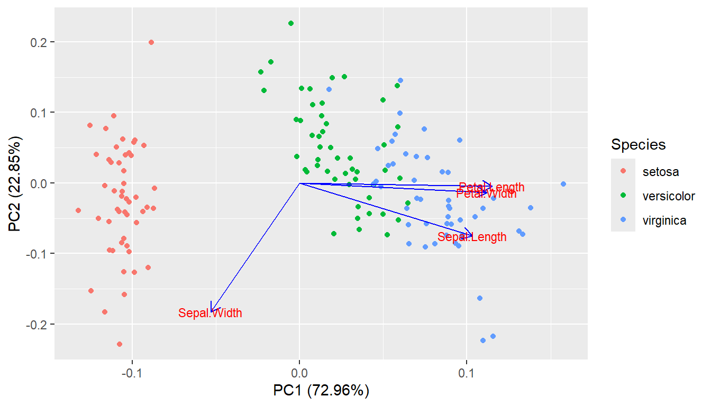
4.4.1 Ejercicio:
Considera los datos europa.dat que están disponibles en Aula Digital. Los datos corresponden a los porcentajes de población empleados en diferentes actividades económicas en Europa para el año 1979. Las variables consideradas son: Agricultura, Minas, Fábricas, Suministro Eléctrico, Construcción, Industrias de Servicio, Finanzas, Servicios Sociales y Personales y, Transporte y Comunicaciones. Utiliza el método de componentes principales para reducir el número de variables, y tratar de determinar grupos de países con comportamientos semejantes en la distribución de su fuerza de trabajo. En este caso, usa la matriz de covarianza para el cálculo de las componentes principales, ya que todos los datos están medidos en la misma escala (porcentaje de la población) y por las caractersticas de los datos, no parece una buena idea considerarlos todos de igual manera.
4.5 Escalamiento multidimensional (MDS)
Las técnicas de escalado multidimensional son una generalización de la idea de componentes principales cuando en lugar de disponer de una matriz de observaciones por variables, como en componentes principales, se dispone de una matriz, \(\mathbf{D}\), cuadrada \(n \times n\) de distancias o disimilaridades entre los \(n\) elementos de un conjunto.
Estas distancias pueden haberse obtenido a partir de ciertas variables, o pueden ser el resultado de una estimación directa, por ejemplo preguntando a un grupo de evaluadores por sus opiniones sobre las similaridades entre los elementos considerados.
El objetivo del \(MDS\) es representar las distancias observadas mediante unas variables con dimensión menor a \(n\), tales que las distancias euclideanas entre las coordenadas de los elementos respecto a estas variables sean iguales (o lo más próximas posibles) a las distancias o disimilaridades de la matriz partida. De esta manera, la representación gráfica en menor dimensión será una reproducción fiel de la estructura observada.
El escalado multidimensional comparte con componentes principales el objetivo de describir e interpretar los datos. Si existen muchos elementos, la matriz de similaridades será muy grande y la representación por unas pocas variables de los elementos nos permitirá entender su estructura: qué elementos tienen propiedades similares, si aparecen grupos entre los elementos, si hay elementos atípicos, etc.
El escalado multidimensional representa un enfoque complementario a componentes principales en el sentido siguiente.
Componentes principales considera la matriz \(p \times p\) de correlaciones (o covarianzas) entre variables, e investiga su estructura.
El escalado multidimensional considera la matriz \(n \times n\) de correlaciones (o covarianzas) entre individuos, e investiga su estructura. Los métodos existentes se dividen en métricos, cuando la matriz inicial es propiamente de distancias, y no métricos, cuando la matriz es de similaridades. Los métodos métricos, utilizan las diferencias entre similitudes mientras que los no métricos parten de que si \(A\) es más similar a \(B\) que a \(C\), entonces \(A\) esta más cerca de \(B\) que de \(C\), pero las diferencias entre las similitudes \(AB\) y \(AC\) no tienen interpretación.
4.5.1 Reconstrucción de las variables a partir de las distancias entre puntos
Dado un conjunto \(p\) de variables en \(n\) individuos representados en la matriz \(\mathbf{X}_{n \times p}\), podemos construir dos tipos de matrices cuadradas y semidefinidas positivas: la matriz de covarianzas muestral \(\mathbf{S}\) (definida por \(\frac{1}{n}\mathbf{X}^t \mathbf{X}\)), si las variables tienen media cero, y la matriz de productos cruzados \(\mathbf{Q} = \mathbf{XX}^t\).
El \(MDS\) puede verse como un análisis de la matriz \(\mathbf{Q}\) y esta puede interpretarse como una matriz de similitudes entre las observaciones ya que sus términos, \(q_{ij}\), contienen el producto escalar de las observaciones de dos elementos dados: \[q_{ij} = \sum_{k=1}^p x_{ik}x_{jk} = \mathbf{x}_i^t \mathbf{x}_j \;\; \;\; \; (1)\] En efecto, como \(q_{ij}=|\mathbf{x}_i||\mathbf{x}_j|\cos \theta_{ij}\), si los dos elementos tienen coordenadas similares, \(\cos \theta_{ij}\approx 1\) y \(q_{ij}\) será grande. Por el contrario, si los dos elementos tienen valores distintos \(\cos \theta_{ij}\approx 0\) y \(q_{ij}\) será pequeño.
La distancia euclideana al cuadrado entre dos elementos se define por:
\[d^2_{ij}=\sum_{k=1}^p (x_{ik}-x_{jk})^2=\sum_{k}x_{ik}^2+\sum_{k}x_{jk}^2-2\sum_{k}x_{ik}x_{jk}\] y la podemos escribir en función de los términos de la matriz \(\mathbf{Q}\),
\[d^2_{ij}=q_{ii}+q_{jj}-2q_{ij} \;\; \;\; \; (2)\]
Por tanto, dada la matriz \(\mathbf{X}\) podemos construir la matriz \(\mathbf{Q}\) y a partir de esta matriz es fácil obtener la matriz de distancias al cuadrado con ayuda de las expresiones (1) y (2).
El problema que se aborda en MDS es el inverso: dada una matriz de distancias al cuadrado, \(\mathbf{D}\), con elementos \(d^2_{ij}\) se trata de reconstruir la matrix \(\mathbf{X}\).
Lo primero que se plantea es obtener la matriz \(\mathbf{Q}\) dada la matriz \(\mathbf{D}\). Para ello, observemos, que sin pérdida de generalidad, siempre podemos suponer que las variables \(X\) tienen media cero. En efecto, las distancias entre los puntos, \(d^2_{ij}\) no varían si expresamos las variables en desviaciones a la media, ya que:
\[d^2_{ij}=\sum_{k=1}^p (x_{ik}-x_{jk})^2=\sum_{k}\left[ (x_{ik}-\bar{x}_k)-(x_{jk}-\bar{x}_k) \right]^2 \;\; \;\; \; (3)\] y, por tanto, podemos suponer siempre que las variables que buscamos tienen media cero.
Por ello, como resulta que \(\mathbf{X}^t \mathbf{1} = 0\) se debe verificar que \(\mathbf{Q}\mathbf{1} = 0\), es decir, la suma de todos los elementos de una fila de la matriz \(\mathbf{Q}\) (y de una columna ya que la matriz es simétrica) debe de ser cero.
Luego, sumamos en (2) por filas: \[\sum_{i=1}^n d^2_{ij}=\sum_{i=1}^n q_{ii}+nq_{jj}=t+nq_{jj} \;\; \;\; \; (4)\] donde \(t=\sum_{i=1}^n q_{ii}=traza(\mathbf{Q})\), y sabiendo que \(\sum_{i=1}^n q_{ij}=0\).
Sumando (2) por columnas se tiene: \[\sum_{j=1}^n d^2_{ij}=n q_{ii}+t \;\; \;\; \; (5)\] y sumando ahora (4) por filas de nuevo se tiene:
\[\sum_{i=1}^n \sum_{j=1}^n d^2_{ij}=2nt\]
Sustituyendo (4) y (5) en (2), tenemos que
\[d^2_{ij}=\frac{1}{n}\sum_{j=1}^n d^2_{ij} - \frac{t}{n} + \frac{1}{n}\sum_{i=1}^n d^2_{ij} - \frac{t}{n} -2 q_{ij}, \] y llamando \(d^2_{i.}\) y \(d^2_{.j}\) a las medias por filas y por columnas y utilizando (5), tenemos que
\[ d^2_{ij}= d^2_{i.}+ d^2_{.j}-d^2_{..}-2 q_{ij} \;\; \;\; \; (6) \] donde \(d^2_{..}=\frac{1}{n^2}\sum_{i=1}^n \sum_{j=1}^n d^2_{ij}\)
Finalmente, despejando de (6) resulta que \[q_{ij}=-\frac{1}{2}\left( d^2_{ij}-d^2_{i.}-d^2_{.j}+d^2_{..}\right)\] expresión que indica cómo construir la matriz \(\mathbf{Q}\) a partir de la matriz de distancias \(\mathbf{D}\).
4.5.2 Coordenadas principales a partir de distancias
Sea \(\mathbf{D}\) una matriz de distancias euclídeas al cuadrado entre \(n\) objetos. Las coordenadas principales son las coordenadas de dichos objetos en \(r < n\) dimensiones, \(Z_1 \ldots Z_r\) (columnas de una matriz \(Z_{n \times r}\)), de manera que la matriz de distancias euclídeas al cuadrado entre las coordenadas de dichos objetos coincida con \(\mathbf{D}\).
Partimos de una matriz de distancias \(\mathbf{D}\) obtenida de una matriz de coordenadas \(Y\) . Vamos a ver que a partir de \(D\) se puede obtener la matriz de productos escalares \(Q = Y Y^t\), y a partir de \(Q\) se obtiene otra matriz de coordenadas \(Z\), cuya matriz de distancias coincide con \(D\).
Vamos a suponer que las columnas de \(Z\) están centradas.
Si realizamos la descomposición espectral de \(\mathbf{Q}\), \[\mathbf{Q}=\mathbf{V} \mathbf{\Lambda}\mathbf{V}^t=\left(\mathbf{V} \mathbf{\Lambda}^{1/2} \right) \left( \mathbf{\Lambda}^{1/2} \mathbf{V}^t \right)\] donde \(\mathbf{\Lambda}\) es una matriz diagonal con los valores propios no nulos de \(\mathbf{Q}\) y \(\mathbf{V}\) es una matriz \(n \times r\) con los \(r\) vectores propios asociados a los valores propios de \(Q\) en sus columnas. La matriz de coordenadas principales es: \[Z= \mathbf{V} \mathbf{\Lambda}^{1/2}\]
El procedimiento para obtener las coordenadas principales es el siguiente:
1.- Formar la matriz de distancias al cuadrado, \(\mathbf{D}\), cuyos elementos son los cuadrados de las distancias.
2.- Construir la matriz \(\mathbf{Q}\) de productos cruzados.
3.- Obtener los valores y vectores propios de \(\mathbf{Q}\). Tomar los \(r\) mayores si podemos suponer que los restantes \(n-r\) son próximos a cero.
4.- Obtener las coordenadas de los puntos en las variables mediante \(\sqrt{{\lambda_i}} \mathbf{v}_i\), donde \(\mathbf{\lambda}_i\) es el valor propio y \(\mathbf{v}_i\) el vector propio.
El método puede aplicarse también cuando la matriz de partida \(\mathbf{Q}\) es una matriz de similaridades cualquiera. Entonces \(q_{ii}=1\), \(q_{ij}=q_{ji}\) y \(0 \leq q_{ij} \leq 1\). De acuerdo a (2), la matriz de distancias asociadas será: \[d^2_{ij}= q_{ii}+ q_{jj}-2 q_{ij}=2(1-q_{ij})\] y puede comprobarse que \(\sqrt{2(1-q_{ij})}\) es una distancia y verifica la desigualdad triangular al corresponder a la distancia euclideana para cierta configuración de puntos.
4.6 Selección del número de dimensiones
Se ha propuesto como medida de la precisión en la aproximación mediante los \(r\) valores propios positivos, los coeficientes:
\[m_{1,r}=\frac{\sum_{i=1}^r |\lambda_i|}{\sum_{i=1}^p |\lambda_i|} \cdot 100\] ó
\[m_{2,r}=\frac{\sum_{i=1}^r \lambda_i^2}{\sum_{i=1}^p \lambda_i^2} \cdot 100\]
4.6.1 Ejemplo a mano
Sobre el siguiente conjunto de animales \(\varepsilon=\{león, jirafa, vaca, oveja, gato, hombre \}\) se han medido las siguientes variables binarias:
\(X_1\): ¿tiene cola?
\(X_2\): ¿es salvaje?
\(X_3\): ¿tiene el cuello largo?
\(X_4\): ¿es animal de granja?
\(X_5\): ¿es carnívoro?
\(X_6\): ¿camina sobre cuatro patas?
La matriz de datos es :
\[\mathbf{X}=\begin{pmatrix} 1 & 1 & 0 & 0 & 1 & 1\\ 1 & 1 & 1 & 0 & 0 & 1\\ 1 & 0 & 0 & 1 & 0 & 1\\ 1 & 0 & 0 & 1 & 0 & 1\\ 1 & 0 & 0 & 0 & 1 & 1\\ 0 & 0 & 0 & 0 & 1 & 0\\ \end{pmatrix} \begin{matrix} león\\ jirafa \\ vaca \\ oveja \\ gato \\ hombre \end{matrix}\]
A partir de esta matriz, construimos las coordenadas principales y realizamos una representación en 2 dimensiones. Calcularemos una medida de precisión de la representación que hemos realizado.
En este caso tenemos \(\mathbf{X}\), si no fuese el caso habría que usar una medida de similiaridad como por ejemplo la de Sokal y Mikener (Ejercicio)
X=matrix(c(1, 1, 0, 0, 1, 1, 1, 1, 1, 0,
0, 1,1, 0, 0, 1, 0, 1,1, 0, 0,
1, 0, 1,1, 0, 0, 0, 1, 1,0, 0,
0, 0, 1, 0), nrow=6, byrow=TRUE)
X [,1] [,2] [,3] [,4] [,5] [,6]
[1,] 1 1 0 0 1 1
[2,] 1 1 1 0 0 1
[3,] 1 0 0 1 0 1
[4,] 1 0 0 1 0 1
[5,] 1 0 0 0 1 1
[6,] 0 0 0 0 1 0Q=X %*% t(X)
valores=eigen(Q)$values
vectores=eigen(Q)$vectors
y1=sqrt(valores[1])*vectores[,1]
y2=sqrt(valores[2])*vectores[,2]Calculamos una medida de precisión (variabilidad explicada) con 2 componentes y miramos la representación
(m_12=(sum(abs(valores[1:2]))/sum(abs(valores)))*100)[1] 86.20502(m_22=(sum(valores[1:2]^2)/sum(valores^2))*100)[1] 97.63187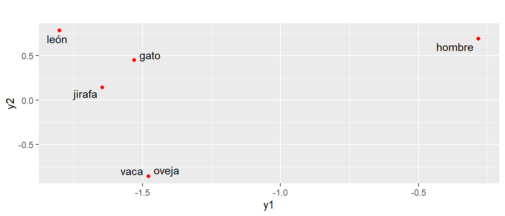
4.7 MDS no métrico
Partiendo de la matriz de disimilaridades \(\mathbf{\Lambda}=(\delta_{ij})\), el escalado no métrico consiste en encontrar unas coordenadas, cuyas distancias euclídeas al cuadrado mantengan el órden de las disimilaridades. Es decir, el escalado no métrico solo tiene en cuenta la información referente al órden entre las disimilaridades, y no su magnitud. El procedimiento es el siguiente:
Se calculan unas coordenadas iniciales \(Z^{(0)}\), por ejemplo aplicando MDS métrico a \(\mathbf{\Lambda}\). Esto es, calcular \(\mathbf{Q}\), realizar la descomposición \(\mathbf{Q}=\mathbf{V} \mathbf{\Lambda}\mathbf{V}^t\) y tomar \(Z^{(0)} =\mathbf{V}_r \mathbf{\Lambda}_r^{1/2}\), donde \(\mathbf{\Lambda}_r\) contiene los \(r\) valores propios mayores y sus \(\mathbf{V}_r\) vectores propios asociados en columnas. Así, obtenemos \(D^{(0)}=(d^{(0)}_{ij})\) a partir de las coordenadas \(Z^{(0)}\).
Se calculan disparidades \(\hat{d}_{ij}\) que son una transformación de las distancias \(d_{ij}\) que mantienen la misma ordenación que las disimilaridades \(\delta_{ij}\), es decir \[\hat{d}_{ij}=f(d_{ij})\] donde \(f\) es una función monótona que verifica: Si \(\delta_{ij} \leq \delta_{kl}\), entonces \(\hat{d}_{ij} \leq \hat{d}_{kl}\).
Ejemplo: Consideremos la matriz de disimilaridades \[\mathbf{\Lambda}=(\delta_{ij})=\begin{pmatrix} 0 & 2.1 & 3 & 2.4\\ & 0 & 1.7 & 3.9 \\ & & 0 & 3.2 \\ & & & 0 \end{pmatrix} \]
Supongamos que hemos obtenido una matriz de coordenadas inicial \(Z^{(0)},\) cuya matriz de distancias es \[D^{(0)}=(d^{(0)}_{ij})=\begin{pmatrix} 0 & 1.6 & 4.5 & 5.7\\ & 0 & 3.3 & 4.3 \\ & & 0 & 1.3 \\ & & & 0 \end{pmatrix}\]
Obtener las disparidades:
Escribimos las disimilaridades en órden creciente \[\delta_{23}=1.7, \delta_{12}=2.1, \delta_{14}=2.4, \delta_{13}=3, \delta_{34}=3.2, \delta_{24}=3.9\]
Ahora escribimos las distancias correspondientes \[d_{23}= \ldots, d_{12}= \ldots, d_{14}= \ldots, d_{13}= \ldots, d_{34}= \ldots, d_{24}= \ldots\]
Si mantuviesen el mismo órden que las disimilaridades, estarían ordenadas de menor a mayor, y en ese caso, las disparidades serían iguales a las distancias. Entonces \(Z^{(0)}\) sería una solución válida.
Una transformación monótona de estas distancias que preserva el órden de las disimilaridades se calcula de la siguiente forma: cuando existe una secuencia de distancias que están ordenadas al contrario de lo deseado, se reemplazan todas estas distancias por la media de las distancias de dicha secuencia. Así, las disparidades son:
\[\begin{align*} \hat{d}_{23} &= \hat{d}_{12}=\frac{1}{2} (d_{23}+d_{12}), \\ \hat{d}_{14} &= \hat{d}_{13}=\hat{d}_{34}=\frac{1}{3} (d_{14}+d_{13}+d_{34}), \\ \hat{d}_{24} &= d_{24} \end{align*}\]
4.8 Medidas de bondad de ajuste de la solución obtenida
Para medir la bondad de ajuste de la solución obtenida:
STRESS: \(S= \left[\frac{\sum_{i<j} (d_{ij}-\hat{d}_{ij})^2}{\sum_{i<j}d^2_{ij}} \right]^{1/2}\)
- \(S \in (0, 0.01] \implies\) Solución muy buena;
- \(S \in (0.01, 0.05] \implies\) Solución buena;
- \(S \in (0.05, 0.1] \implies\) Solución aceptable.
S-STRESS: \(S= \left[\frac{\sum_{i<j} (d_{ij}-\hat{d}_{ij})^2}{\sum_{i<j}d^4_{ij}} \right]^{1/2}\)
Esta medida está entre 0 y 1, siendo valores cercanos a cero indicadores de un buen ajuste, y valores cercanos a 1 indicadores de un mal ajuste.
- RSQ: Es el coeficiente de correlación al cuadrado entre las distancias y las disparidades. El ajuste es aceptable para RSQ \(\geq 0.6\).
Si para las coordenadas actuales, estas medidas no son satisfactorias, entonces pasamos a la búsqueda de una nueva solución. Esta solución se busca minimizando una de las medidas de ajuste respecto a las coordenadas, generalmente se utiliza el STRESS o el S-STRESS.
Minimización del STRESS
Sea \(\mathbf{z}=(\mathbf{z}^t_1, \ldots, \mathbf{z}^t_n)\) el vector formado por las \(n\) filas de \(\mathbf(Z)\) (nuestras incógnitas). El problema es encontrar \(\mathbf{z}\) que minimice \[S= \left[\frac{\sum_{i<j} (d_{ij}(\mathbf{z})-\hat{d}_{ij})^2}{\sum_{i<j}d^2_{ij}(\mathbf{z})} \right]^{1/2}\] donde \[d^2_{ij}(\mathbf{z})=d^2_e(\mathbf{z}_i,\mathbf{z}_j)=\sum_{k=1}^p (z_{ik}-z_{jk})^2.\] Este problema es no lineal, con lo cual es necesario recurrir a métodos de resolución numéricos.
4.9 Escalamiento multidimensional en R
La función en R para llevar a cabo un MDS es cmdscale(d,k,eig=FALSE), donde
des un objeto clase distancia como la producida pordisto una matriz simétrica que contiene disimilaridades.kes la dimensión del espacio en cual queremos representar los datos.eiges una variable lógica que indica si los valores propios deben ser presentados.
Consideremos como ejemplo un conjunto de datos de la librería MVA que contiene las distancias por carretera entre 21 ciudades europeas en km.
En base a estas distancias, deseamos “reconstruir” el mapa.
library(MVA)Loading required package: HSAUR2Loading required package: toolsdata("eurodist")
str(eurodist) 'dist' num [1:210] 3313 2963 3175 3339 2762 ...
- attr(*, "Size")= num 21
- attr(*, "Labels")= chr [1:21] "Athens" "Barcelona" "Brussels" "Calais" ...eur.mds<-cmdscale(eurodist,k=2)
plot(eur.mds, type="n")
text(eur.mds, labels = rownames(eur.mds))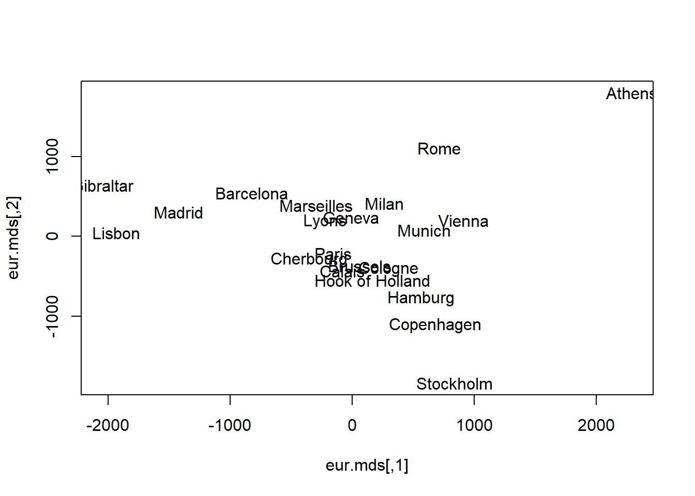
Hemos obtenido una forma similar a lo que esperaríamos de un mapa de Europa, pero con norte y sur intercambiados.
Un ejemplo de cómo trabajar con tidyverse, ver el siguiente link
4.10 Práctica
El metabolismo se caracteriza por reacciones químicas vinculadas entre sí, creando una compleja estructura de red. Una representación simplificada del metabolismo, que denominamos red metabólica abstracta, es un grafo en el que las vías metabólicas son nodos y existe una arista entre dos nodos si sus correspondientes vías comparten uno o más compuestos.
Para explorar los potenciales y límites de una representación tan básica, hemos empleado tres tipos de kernels (distancias entre grafos):
VH (Vertex histogram): solo tiene en cuenta si las etiquetas de los nodos de los grafos que se comparan son iguales o no.
SP (Shortest-Path): compara los grafos en función de sus caminos más cortos. Intuitivamente, esto significa medir lo fácil o difícil que es conectar, a través de compuestos compartidos, parejas de caminos en los dos grafos.
PM (Pyramid Match): mide la similitud de las características topológicas (por ejemplo, la conectividad) de los nodos con la misma etiqueta en los dos grafos comparados.
La práctica consiste en representar gráficamente (con solo 2 coordenadas principales) las matrices de similitud generadas por cada kernel coloreando los puntos de acuerdo al grupo de animales de acuerdo a su phylum.
Los ficheros necesarios para realizar la práctica los podéis descargar de la página del curso en Aula Digital.